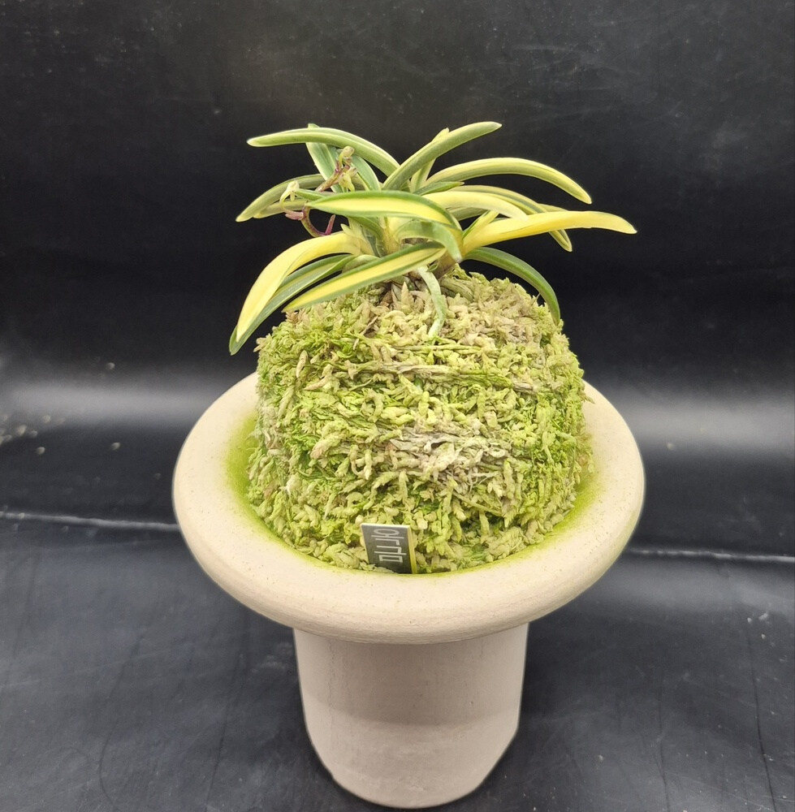
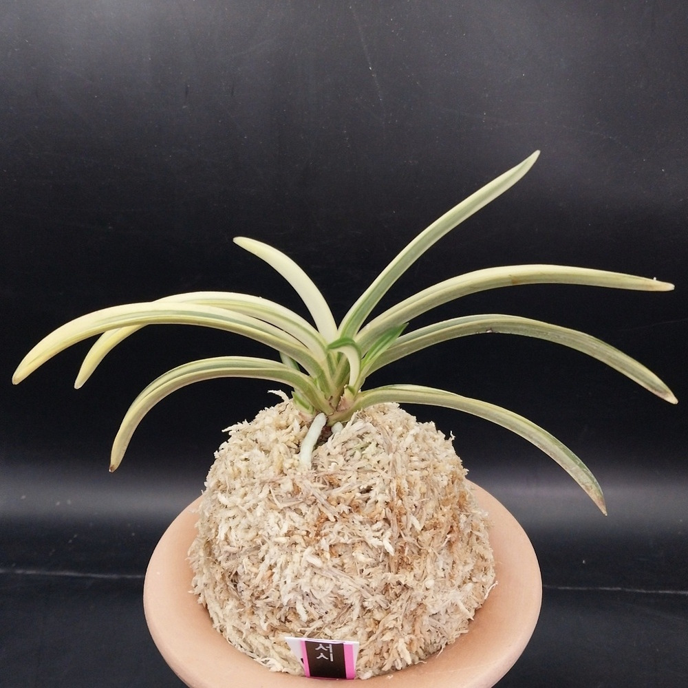
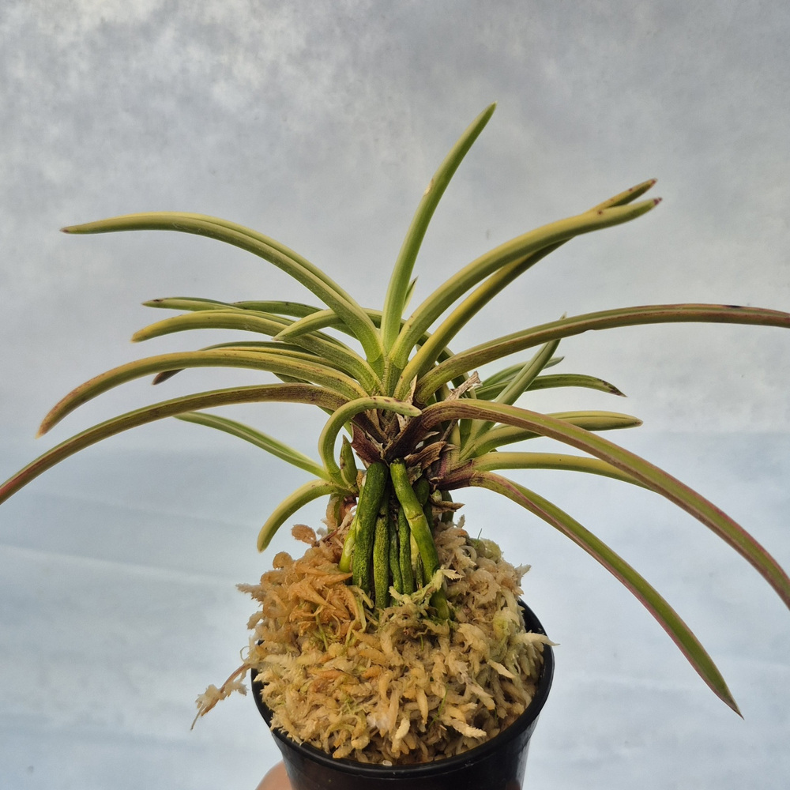

CSFART
숯돌꽃 난농원
CSFART 상품 안내
무지
호·중반
복륜
특예
호반
화물
입문·기타란
석곡
자재
← 메뉴를 좌우로 밀어보세요 →
CSFART COLLECTION
복륜
복륜 상품

옥금(玉錦) 풍란
350,000원
소형 희엽 · 백복륜

서시 1001 풍란 · 부귀란
70,000원
백복륜 · 실제 판매 개체 · 사진 기준 분류

동출도(東出都) 0001 풍란
15,000원
선천성 백복륜 · 희엽